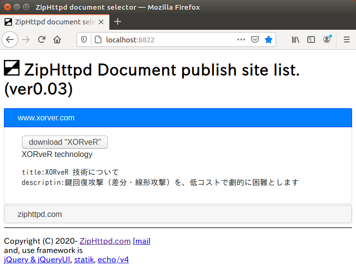
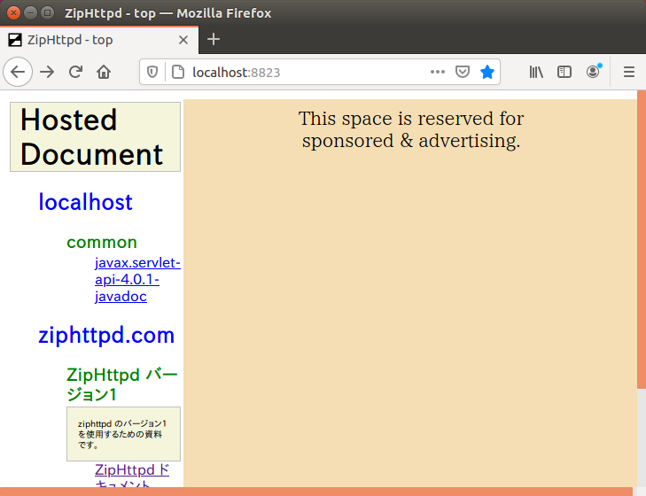

ZipHttpd を Windows でビルドする手順 ZipHttpd を Windows でビルドする手順
ZipHttpd を Windows でビルドする手順 ZipHttpd を Windows でビルドする手順
ver とりあえず版 - 2021/01/23 ZipHttpd.com
Windows は ZipHttpd のバイナリ提供を行っています。
そのため、ソースコードからのビルドでご利用することは推奨できません。
しかし、最新のバグ対応などをいち早く入手したい場合などで自分でビルドしたい場合もあるかと思います。
本ドキュメントは Windows でソースからビルドする手順に関してのものです。
なお、本ドキュメントの一部の画像は UNIX へのインストールのドキュメントの画像からの流用です。
複数のプロジェクトで構成されているため、ビルドして配置するのは面倒です。
そのため簡単にビルドできるようにしてあります。
しかし、同時に不安定版でもあります。
問題がある場合、直近以外のコミットでビルドすると治る可能性があります。
将来的には Git Flow 方式を採用し、タグを付ける予定です。
Git と Go (ver1.11以上) を必要とします。
Git は標準としてインストールされているもので結構です。
Go は version 1.11 以降であるならば問題ありません。
d:\.ziphttpd>go version
go version go1.14.13 windows/amd64
d:\.ziphttpd>
インストールされていない場合は公式のインストール手順に従ってください。
ZipHttpd は任意のディレクトリにインストールできます。
ディレクトリを用意したら、インストールバッチファイル(CMD)をダウンロードします。
このディレクトリ以下に動作環境を構築しますので、専用のディレクトリを作ってください。
このディレクトリ以下のみを参照しますので、USB などのリムーバブルな場所に構築すれば他のマシンでも稼働できます。
mkdir .ziphttpd
cd .ziphttpd/
bitsadmin /transfer myDownloadJob /download /priority normal https://ziphttpd.com/static/zh_download.cmd %CD%\zh_download.cmd
dir
d:\.ziphttpd>mkdir .ziphttpd
d:\.ziphttpd>cd .ziphttpd
d:\.ziphttpd>bitsadmin /transfer myDownloadJob /download /priority normal https://ziphttpd.com/static/zh_download.cmd %CD%\zh_download.cmd
DISPLAY: 'myDownloadJob' TYPE: DOWNLOAD STATE: TRANSFERRED
PRIORITY: NORMAL FILES: 1 / 1 BYTES: 742 / 742 (100%)
Transfer complete.
d:\.ziphttpd>dir
ドライブ D のボリューム ラベルがありません。
ボリューム シリアル番号は AA29-6187 です
d:\.ziphttpd のディレクトリ
2021/01/23 20:05 <DIR> .
2021/01/23 20:05 <DIR> ..
2021/01/23 20:06 742 zh_download.cmd
1 個のファイル 742 バイト
2 個のディレクトリ 78,172,520,448 バイトの空き領域
d:\.ziphttpd>
インストールはダウンロードしたスクリプトで実施します。
./zh_download.cmd
dir
d:\.ziphttpd>zh_download.cmd
"ZH_HOME: d:\.ziphttpd\"
"ZH_SRC: d:\.ziphttpd\src"
"PROJECT BUILD START: ziphttpd.windows"
Cloning into 'ziphttpd.windows'...
remote: Enumerating objects: 31, done.
remote: Counting objects: 100% (31/31), done.
remote: Compressing objects: 100% (22/22), done.
remote: Total 31 (delta 11), reused 27 (delta 7), pack-reused 0
Unpacking objects: 100% (31/31), 3.41 KiB | 1024 bytes/s, done.
Already up to date.
Already up to date.
1 個のファイルをコピーしました。
（・・・中略・・・）
プロジェクト "d:\.ziphttpd\src\Launcher\ziphttpdTool.sln" (既定のターゲット) のビルドが完了しました。
ビルドに成功しました。
0 個の警告
0 エラー
経過時間 00:00:01.25
1 個のファイルをコピーしました。
d:\.ziphttpd>
インストール後は以下のようになります。
d:\.ziphttpd>dir
ドライブ D のボリューム ラベルがありません。
ボリューム シリアル番号は AA29-6187 です
d:\.ziphttpd のディレクトリ
2021/01/23 20:05 <DIR> .
2021/01/23 20:05 <DIR> ..
2021/01/23 20:10 <DIR> src
2021/01/23 20:06 742 zh_download.cmd.old
2021/01/23 20:10 785 zh_download.cmd
2021/01/23 20:10 10,786,304 ziphttpd.exe
2021/01/23 20:10 7,476,224 zhsign.exe
2021/01/23 20:10 7,489,024 zhget.exe
2021/01/23 20:11 12,558,848 selector.exe
2021/01/23 20:11 7,789,568 updater.exe
2021/01/23 20:11 14,848 launcher.exe
8 個のファイル 46,116,343 バイト
3 個のディレクトリ 77,950,877,696 バイトの空き領域
d:\.ziphttpd>
Launcher をダブルクリックすると、タスクバーに  アイコンが表示され、起動後のディレクトリは以下のようになります。
アイコンが表示され、起動後のディレクトリは以下のようになります。
d:\.ziphttpd>dir
ドライブ D のボリューム ラベルがありません。
ボリューム シリアル番号は AA29-6187 です
d:\.ziphttpd のディレクトリ
2021/01/23 20:05 <DIR> .
2021/01/23 20:05 <DIR> ..
2021/01/23 20:10 <DIR> src
2021/01/23 20:06 742 zh_download.cmd.old
2021/01/23 20:10 785 zh_download.cmd
2021/01/23 20:10 10,786,304 ziphttpd.exe
2021/01/23 20:10 7,476,224 zhsign.exe
2021/01/23 20:10 7,489,024 zhget.exe
2021/01/23 20:11 12,558,848 selector.exe
2021/01/23 20:11 7,789,568 updater.exe
2021/01/23 20:11 14,848 launcher.exe
2021/01/23 20:10 10,786,304 ziphttpd.exe.now
2021/01/23 20:14 6 ziphttpd.pid
2021/01/23 20:14 <DIR> log
2021/01/23 20:14 380 ziphttpd.json
2021/01/23 20:14 <DIR> docs
2021/01/23 20:14 2 portlockins.json
12 個のファイル 56,903,035 バイト
5 個のディレクトリ 77,939,212,288 バイトの空き領域
d:\.ziphttpd>
ZipHttpd のトップページはアイコンをダブルクリックすると開きます。

インストール直後ではドキュメントが何もダウンロードされていません。
まずは次節を参照して説明書のダウンロード設定をしてください。
ダウンロード設定の例として、説明書を用います。
その操作のため、まずはアイコンを右クリックしてメニューを出して Selector を起動してください。
selector はリポジトリから ZipHttpd のドキュメントを公開しているサイトにアクセスするツールです。
ブラウザで http://localhost:8822 にアクセスします。
リポジトリ登録されているサイトの一覧がアコーディングメニューで表示されています。

この中から ziphttpd.com を探して開きます。
開いた中に「download "ZipHttpd バージョン1"」のボタンがありますので押してください。

ZhpHttpd を再起動してください。
ブラウザで見ると ZipHttpd ドキュメントが top 画面に追加されています。

selector の WebAPI でワンタッチ登録させる案もありましたが、第三者に勝手に登録される危険性があるため廃案となりました。
例) http://localhost:8822/api/one/{サイト}/{グループ} へのリンクをクリックすると登録
ドキュメントを top 画面のリンクから開きます。

selector は zhget のフロントエンドです。
ダウンロードするドキュメントが特定できているならば、
zhget.exe -host ziphttpd.com -group ziphttpd-V1
という操作でもダウンロードの登録が可能です。
この操作ではリポジトリに登録していないサイトのドキュメントでもダウンロードできます。
Java のドキュメントは zip 圧縮されていますので、ZipHttpd で簡単に参照できます。
まずは docs フォルダにダウンロードします。
コマンドラインでダウンロードするにはこんな感じです。
set URL=https://repo1.maven.org/maven2/javax/servlet/javax.servlet-api/4.0.1/javax.servlet-api-4.0.1-javadoc.jar
bitsadmin /transfer myDownloadJob /download /priority normal %URL% %CD%\docs\javax.servlet-api-4.0.1-javadoc.jar
ZhpHttpd を再起動してください。
top 画面にリンクが追加されます。

top 画面のリンクから開きます。

ドキュメントの初期表示ファイルが分かりませんので、ディレクトリが表示されていますが、index.html を開くようにします。
type docs/javax.servlet-api-4.0.1-javadoc.json
vi docs/javax.servlet-api-4.0.1-javadoc.json
type docs/javax.servlet-api-4.0.1-javadoc.json
{
"name": "javax.servlet-api-4.0.1-javadoc",
"path": "docs\\javax.servlet-api-4.0.1-javadoc.jar"
}
そのため、docs のドキュメント設定ファイルに "docroot": "index.html", の一行を追加します。
{
"docroot": "index.html",
"name": "javax.servlet-api-4.0.1-javadoc",
"path": "docs\\javax.servlet-api-4.0.1-javadoc.jar"
}
メニューから再起動(Restart)することでドキュメントの初期表示ファイルとして index.html が開かれるようになります。

また、ドキュメントによっては文字コードが utf-8 でないため文字化けする場合があります。
その場合にはファイルの文字コードを確認し、"contentencoding": "Shift_JIS", と追加してください。
selector は ziphttpd.com をリポジトリとして、ドキュメントの提供サイトを取得しています。
リポジトリへの登録はドキュメントにはまだ記述していませんが、サインインなしの無料で登録可能です。
公開鍵(public.pem)＆公開鍵署名(public.pem.zhsig)とカタログ(catalog.json)を zhsign で作成します。
カタログに説明などを書き込み、自社(例:yourdomain.com)サイトの https://yourdomain.com/sig/ 以下に公開します。
https://ziphttpd.com/api/v1/regist/yourdomain.com にアクセスします。（ブラウザからでも構いません）
これを契機として ziphttpd.com は公開鍵を署名で検証したのちに、一覧にそのドメインを追加します。
インストールした後に ZipHttpd が更新された場合にはどうしたら良いでしょうか？
また、ダウンロードしているドキュメントが著作者によって更新されている場合も面倒です。
そんな時のための説明です。
ソースコードからビルドしている場合、Updater を使用するとバイナリ提供版で更新されてしまいます。
ソースから更新するには、インストールと同じく zh_download.cmd を実行します。
プログラムが常駐している場合に問題があるかもしれませんので、停止させてから実行してください。
zh_download.cmd
d:\.ziphttpd>zh_download.cmd
"ZH_HOME: d:\.ziphttpd\"
"ZH_SRC: d:\.ziphttpd\src"
"PROJECT BUILD START: ziphttpd.windows"
Already up to date.
Already up to date.
1 個のファイルをコピーしました。
"PROJECT BUILD START: ziphttpd"
Already up to date.
Already up to date.
1 個のファイルをコピーしました。
"PROJECT BUILD START: zhsig"
Already up to date.
Already up to date.
1 個のファイルをコピーしました。
1 個のファイルをコピーしました。
"PROJECT BUILD START: selector"
Already up to date.
Already up to date.
1 個のファイルをコピーしました。
"PROJECT BUILD START: updater"
Already up to date.
Already up to date.
1 個のファイルをコピーしました。
"PROJECT BUILD START: Launcher"
Already up to date.
Already up to date.
Microsoft (R) Build Engine バージョン 4.8.3752.0
[Microsoft .NET Framework、バージョン 4.0.30319.42000]
Copyright (C) Microsoft Corporation. All rights reserved.
このソリューション内のプロジェクトを 1 度に 1 つずつビルドします。並行ビルドを有効にするには、"/m" スイッチを追加してください。
2021/01/23 23:10:42 にビルドを開始しました。
ノード 1 上のプロジェクト "d:\.ziphttpd\src\Launcher\ziphttpdTool.sln" (既定のターゲット)。
ValidateSolutionConfiguration:
ソリューション構成 "Release|Any CPU" をビルドしています。
プロジェクト "d:\.ziphttpd\src\Launcher\ziphttpdTool.sln" (1) は、ノード 1 上に "d:\.ziphttpd\src\Launcher\launcher\launcher.csproj" (2) をビルドしています (既定のターゲット)。
プロジェクト ファイルに ToolsVersion="15.0" が含まれています。このツールセットが不明であるか、存在しない可能性があります。その場合は、適切なバージョンの MSBuild をインストールして解決するか、ビルドがポリシー上の理由により特定の ToolsVersion を使用するよう強制されている可能性があります。プロジェクトを ToolsVersion="4.0" として扱います。詳細については、http://go.microsoft.com/fwlink/?LinkId=291333 を参照してくだ
さい。
CoreResGen:
古いリソースは、それらのソース ファイルに対して存在しません。リソース生成を省略します。
GenerateTargetFrameworkMonikerAttribute:
すべての出力ファイルが入力ファイルに対して最新なので、ターゲット "GenerateTargetFrameworkMonikerAttribute" を省略します。
CoreCompile:
すべての出力ファイルが入力ファイルに対して最新なので、ターゲット "CoreCompile" を省略します。
CopyFilesToOutputDirectory:
"obj\Release\launcher.exe" から "bin\Release\launcher.exe" へファイルをコピーしています。
launcher -> d:\.ziphttpd\src\Launcher\launcher\bin\Release\launcher.exe
プロジェクト "d:\.ziphttpd\src\Launcher\launcher\launcher.csproj" (既定のターゲット) のビルドが完了しました。
プロジェクト "d:\.ziphttpd\src\Launcher\ziphttpdTool.sln" (既定のターゲット) のビルドが完了しました。
ビルドに成功しました。
0 個の警告
0 エラー
経過時間 00:00:00.67
1 個のファイルをコピーしました。
d:\.ziphttpd>
更新されたドキュメントを自動的にダウンロードすることができます。
そのためには zhget を引数無しで実行します。
ZipHttpd を再起動すればドキュメントは更新されたものになります。
./zhget
d:\.ziphttpd>zhget
d:\.ziphttpd>
Copyright (C) 2020- ZipHttpd.com [mail]